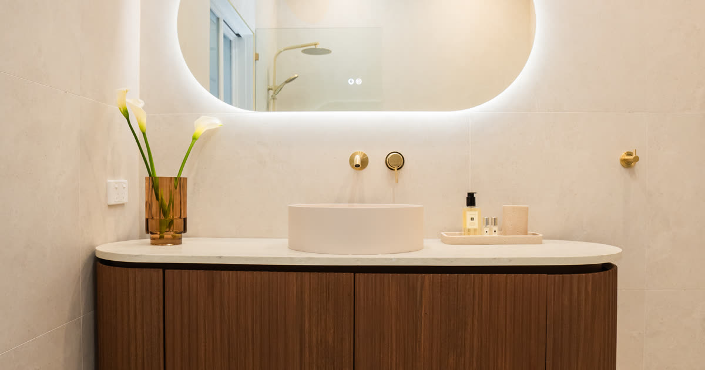

How to Choose the Right Tiles for Your Bathroom: A Sydney Homeowner's Guide

Renovating a bathroom is one of the most rewarding home improvement projects you can undertake. It adds value to your property, improves your daily routine and transforms one of the most frequently used rooms in your home. However, choosing the right tiles can feel overwhelming given the sheer number of options available at tile showrooms across Sydney. From material type and size to colour, texture and slip resistance, there are many factors to consider before making your final selection.
This guide walks you through everything you need to know about choosing bathroom tiles for your North Shore home, helping you make an informed decision that balances aesthetics, functionality and budget.
Types of Bathroom Tiles
The material you choose for your bathroom tiles will affect everything from durability and maintenance to the overall look and feel of the finished space. Here are the most popular options for Sydney homeowners.
Ceramic Tiles
Ceramic tiles are one of the most popular and affordable choices for bathroom renovations. Made from natural clay fired at high temperatures, ceramic tiles are available in an enormous range of colours, patterns and finishes. They are relatively easy to cut and install, making them a versatile option for walls and floors. Ceramic tiles are water-resistant once glazed and require minimal maintenance, though they are slightly softer than porcelain and may chip more easily in high-traffic areas.
For budget-conscious homeowners on the North Shore, ceramic tiles offer excellent value without compromising on style. Expect to pay between $20 and $60 per square metre for quality ceramic tiles at Sydney tile suppliers.
Porcelain Tiles
Porcelain tiles are made from a denser, more refined clay and fired at higher temperatures than ceramic tiles. This process makes them exceptionally durable, harder wearing and less porous, which means they absorb less water and are ideal for wet areas like bathrooms and shower recesses. Porcelain tiles can convincingly replicate the appearance of natural stone, timber or concrete at a fraction of the cost and with far less maintenance.
Many of the modern bathroom tiling projects we complete across the North Shore use large-format porcelain tiles, which create a seamless, contemporary look with fewer grout lines. Porcelain typically costs between $40 and $100 per square metre, depending on the brand and finish.
Natural Stone Tiles
Natural stone tiles, including marble, travertine, limestone and slate, bring a timeless luxury to any bathroom. Each tile is unique in colour and veining, which creates a high-end, bespoke aesthetic that manufactured tiles cannot fully replicate. Natural stone is particularly popular in heritage homes and upscale renovations across suburbs like Mosman and Chatswood.
However, natural stone requires more maintenance than ceramic or porcelain. It needs to be sealed regularly to prevent staining and water absorption, and some stone types can be slippery when wet unless given a honed or textured finish. Natural stone tiles range from $80 to $200 or more per square metre, with marble sitting at the premium end.
Glass Mosaic Tiles
Glass mosaic tiles are a popular choice for feature walls, shower niches and splashback accents in Sydney bathrooms. Their reflective surface adds depth and light to smaller bathrooms, making the space feel larger and more open. Glass mosaics are available in a stunning array of colours and can be arranged in geometric patterns, gradients or random blends to create a truly unique design statement.
While glass mosaic tiles are beautiful and waterproof, they can be more expensive to install due to the precision required. They are best used as accent features rather than covering entire floors or walls. Budget between $60 and $150 per square metre for quality glass mosaic options.
Size Considerations for Different Bathroom Sizes
The size of the tiles you choose has a significant impact on the overall appearance of your bathroom. Choosing the right tile dimensions for your space can make a small bathroom feel larger or bring warmth and proportion to a generously sized room.
Small bathrooms (under 4 sqm): Medium-format tiles in the 300mm x 600mm range are often the best choice for compact ensuites and powder rooms. They reduce the number of grout lines, making the space appear less busy and more open. Light-coloured tiles with a glossy or satin finish also help reflect light and create the illusion of more space. Avoid very large tiles in tiny bathrooms, as the number of cuts required can look awkward and waste material.
Medium bathrooms (4-8 sqm): This is where you have the most flexibility. Large-format tiles up to 600mm x 600mm or 600mm x 1200mm work beautifully on both walls and floors. You can also introduce feature tiles or a different pattern in the shower recess to create visual interest without overwhelming the space.
Large bathrooms (over 8 sqm): Spacious bathrooms can handle very large-format tiles, including 900mm x 900mm or even 1200mm x 1200mm slabs. These oversized tiles create a luxurious, minimalist aesthetic with very few grout lines. Just ensure your tiler has experience working with large-format tiles, as they require specialist tools and adhesives to avoid cracking and lippage.
Colour and Pattern Trends for 2026
Tile trends in Sydney for 2026 are leaning towards earthy, natural tones with a focus on texture and organic materials. Here are the key trends we are seeing across our North Shore bathroom renovation projects:
- Warm neutrals: Soft greige, warm taupe and sandy beige tones are replacing the cooler greys that dominated bathrooms over the past decade. These warmer hues create a calming, spa-like atmosphere.
- Terrazzo revival: Terrazzo tiles continue to be popular in 2026, with larger aggregate chips and more muted colour palettes than previous years. They work well as feature floors or shower walls.
- Textured surfaces: Three-dimensional tiles with rippled, fluted or ribbed surfaces are trending for feature walls. These tactile tiles add depth and visual interest without the need for bold colours.
- Forest and sage greens: Green tones, particularly deep forest green and muted sage, are a standout colour choice for 2026 bathrooms. They pair beautifully with brass tapware and natural timber vanities.
- Zellige and handmade looks: The imperfect, handcrafted aesthetic of zellige-style tiles continues to grow in popularity. Their slightly uneven surface and colour variation add character and warmth.
Slip Resistance Ratings: The P-Rating System in Australia
Slip resistance is a critical safety consideration when choosing bathroom floor tiles in Australia. The Australian Standard AS 4586 classifies tiles according to their slip resistance using the P-rating system for wet areas. Understanding these ratings is essential, particularly for households with young children or elderly family members.
- P1: Suitable for dry areas only. Not recommended for bathroom floors.
- P2: Suitable for areas that may get intermittently wet, such as bathroom floors outside the shower zone.
- P3: Suitable for areas that are regularly wet, including inside shower recesses and around bathtubs.
- P4 and P5: High slip resistance suitable for commercial wet areas, pool surrounds and ramps.
For residential bathrooms, we recommend a minimum of P3-rated tiles for shower floors and P2 for general bathroom floor areas. Your tile supplier should be able to provide the P-rating for any tile you are considering, and our tiling team can advise you on the most appropriate ratings for each area of your bathroom.
Waterproofing Requirements in NSW
In New South Wales, all wet areas must be waterproofed in accordance with Australian Standard AS 3740. This is not optional; it is a legal requirement that protects your home from water damage and structural issues. Waterproofing must be completed before any tiles are laid and should be carried out by a licensed waterproofer who can issue a compliance certificate.
Key waterproofing requirements for NSW bathrooms include:
- Shower floors and walls must be waterproofed to a minimum height of 1800mm (or the full height of the shower recess if tiled to the ceiling)
- The entire bathroom floor must be waterproofed, extending at least 150mm up all walls
- All floor-to-wall junctions, pipe penetrations and corner joints must use bond-breaker tape
- A minimum of two coats of waterproof membrane must be applied with the second coat at right angles to the first
- The membrane must be allowed to cure fully before tiling commences
At North Shore Tiling, we ensure every bathroom tiling project includes full waterproofing that meets or exceeds the Australian Standard. We provide a waterproofing certificate with every wet-area installation, giving you complete peace of mind and protecting your investment for years to come.
Budget Considerations
Your total bathroom tiling budget will depend on several factors, including the size of the bathroom, the tile material and quality, the complexity of the layout, and whether any demolition or waterproofing is required. Here is a general guide to help you plan:
- Budget-friendly ($40-$70/sqm installed): Ceramic tiles in standard sizes with a simple layout. Ideal for rental properties, secondary bathrooms and investment properties.
- Mid-range ($70-$120/sqm installed): Quality porcelain tiles, including large-format options and feature walls. This is where most North Shore homeowners sit and offers the best balance of quality and value.
- Premium ($120-$250+/sqm installed): Natural stone, designer porcelain, glass mosaic features and complex patterns. Best suited for master ensuites and high-end renovations.
Keep in mind that these estimates include supply and installation but may not cover demolition of existing tiles, waterproofing, plumbing modifications or additional substrate preparation. We always provide a detailed, transparent quote that breaks down every cost before work begins.
Why Professional Installation Matters
While it might be tempting to tackle bathroom tiling as a DIY project to save money, professional installation is strongly recommended, particularly for wet areas. A poorly tiled bathroom can lead to water damage behind walls, mould growth, cracked or loose tiles, uneven surfaces and costly rectification work.
Professional tilers bring the expertise needed for:
- Precise substrate preparation and levelling to ensure a flat, stable base
- Correct waterproofing application that meets Australian Standards
- Expert tile layout to minimise cuts and waste while maximising visual impact
- Working with large-format tiles that require specialist adhesives and handling
- Achieving consistent grout lines and lippage-free finishes
- Proper sealing and finishing for long-lasting results
Our team at North Shore Tiling has years of experience tiling bathrooms across Sydney's North Shore, from compact apartment ensuites in Chatswood to spacious master bathrooms in Mosman. We handle every aspect of the tiling process, from initial consultation through to waterproofing, installation and final inspection.